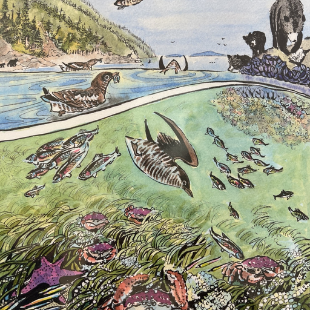
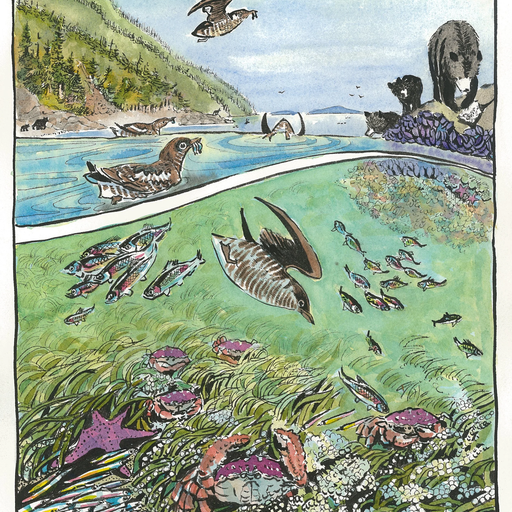
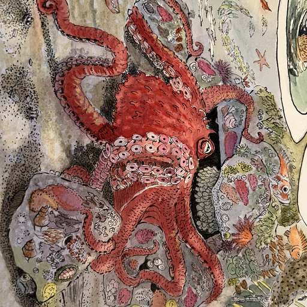
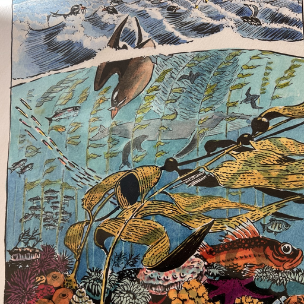
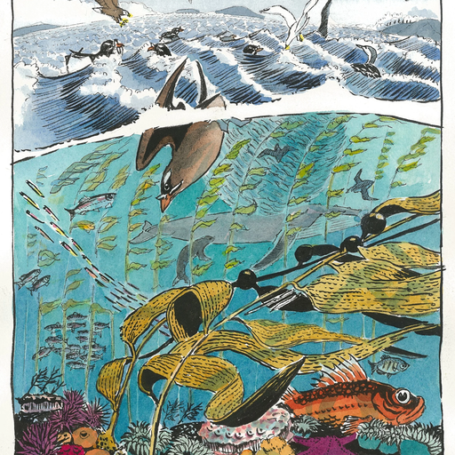
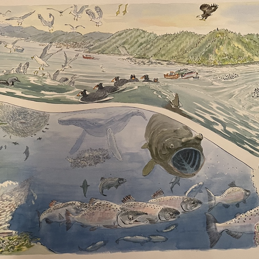

Briony LoRA — Honest Evaluation v2
Does the LoRA actually capture Briony Penn's style? Side-by-side comparison for the team.
Context: LoRA trained on 22 Briony Penn watercolors (rank 16, 1000 steps).
Two versions: briony_watercolor_v1.safetensors (SD 1.5, 30 steps, 38 MB) and
briony_watercolor_sdturbo.safetensors (SD-Turbo, 1-4 steps, 13 MB).
The img2img results below used the SD 1.5 version. The SD-Turbo version in TouchDesigner has fewer inference steps, which may further reduce style fidelity.
Key question: Is this close enough to Briony's aesthetic for the exhibition, or do we need a different approach?
0. Reference — What Briony's Art Actually Looks Like
These are the training images. This is what we're trying to capture.

Briony Kelp Forest Ecosystem

Briony Central Coast Inshore

Briony Giant Pacific Octopus

Briony Salmon Forest Cycle

Briony Central Coast Offshore

Briony Salish Sea Panorama
Briony's signature characteristics
- Bold ink linework — dark outlines define every creature and plant, almost woodcut-like
- Vivid, saturated palette — teals, coral reds, ochre yellows, deep greens. Never muddy.
- Illustrative composition — cross-section views, ecosystem diagrams, educational layering (above/below water)
- Visible brushstrokes — hand-painted texture, pigment variation, not smooth gradients
- Ecological storytelling — every painting is a food web, a habitat, a relationship
- Flat/semi-flat perspective — not photorealistic depth, more like scientific illustration meets folk art
1. txt2img — LoRA Generating from Prompts (SD 1.5, 30 steps)
LoRA loaded, generating from text prompts with brionypenn trigger. No input image.

LoRA txt2img Orca breaching

LoRA txt2img Herring in kelp

LoRA txt2img Octopus

LoRA txt2img Cedar forest

LoRA txt2img Camas meadow

LoRA txt2img Bear + salmon

LoRA txt2img Misty coast

LoRA txt2img Kelp bioluminescent
Assessment: txt2img
- The LoRA does shift toward a watercolor aesthetic — softer edges, more painterly
- But it's more "generic watercolor" than specifically Briony — missing the bold linework, the vivid saturated palette, and the illustrative composition style
- The orca (00) has the closest feel — dark shapes on water. But compare it to Briony's actual paintings above.
- SD 1.5 with 30 steps and guidance 7.5 gives the best quality. SD-Turbo with 1-4 steps will be looser.
2. A/B — Base SD 1.5 vs LoRA (same prompt, same seed)
Left = base SD 1.5 (no LoRA). Right = LoRA with brionypenn trigger. How much difference does the LoRA make?
Orca breaching

Base SD 1.5

+ LoRA
Herring in kelp

Base SD 1.5

+ LoRA
Octopus

Base SD 1.5

+ LoRA
Assessment: A/B delta
- The LoRA IS doing something — compositions shift, color palette changes, edges soften
- The effect is subtle though. On a projector in a dark room, the difference from base SD might not read clearly as "Briony Penn"
- Someone who knows Briony's work would not immediately say "that looks like a Briony Penn painting"
3. img2img — GAN Fish → LoRA Filter (strength sweep)
Original GAN output (kimg 200) on the left, then LoRA applied at increasing strength. SD 1.5, 30 steps.
4. The Gap
What the LoRA captures
- General "watercolor" softness and edge quality
- Some color palette shift toward natural pigments
- Painterly texture over photorealistic sharpness
What the LoRA misses
- Bold ink outlines — Briony's most recognizable feature. The LoRA produces soft edges, not bold lines.
- Vivid color saturation — Briony uses intense teals, corals, ochres. The LoRA output is muted/muddy by comparison.
- Illustrative composition — Briony's cross-section views and ecosystem diagrams are compositional, not just stylistic. A LoRA can't learn composition from 22 images.
- Flat perspective — Briony's work is semi-flat, like scientific illustration. The LoRA still produces SD's default photographic depth.
Why the gap exists
- 22 images is very few — the full set of 54 Briony watercolors might help, but the fundamental issue is that LoRA adapts style more than structure
- SD-Turbo compounds the problem — only 1-4 inference steps means even less room for the LoRA to influence the output. The SD 1.5 version (30 steps) shown here is the best case.
- GAN fish are dark/muddy — iNaturalist photos of fish on gravel are not great input for a vibrant watercolor filter. The LoRA is fighting the input palette.
- LoRA rank 16 may be too low — Briony's style has a lot of detail. Rank 32 or 64 might capture more.
5. What We Can Try
Quick improvements (hours)
- Retrain with all 54 images instead of 22 — more style coverage
- Increase rank to 32 or 64 — more capacity to capture Briony's detail
- More training steps (2000-3000) — let it learn deeper
- Better captions — describe Briony's specific characteristics in each caption ("bold ink outlines, vivid teal and coral, flat perspective, cross-section ecosystem view")
- Higher LoRA weight in TD — push to 1.5 or even 2.0 (may cause artifacts but worth testing)
- Feed brighter input — instead of dark GAN fish, try txt2img with vivid prompts, or bright underwater footage
Alternative approaches (if LoRA isn't enough)
- IP-Adapter — use Briony paintings directly as style reference at inference time, zero training
- ControlNet + LoRA — extract edges from Briony's actual paintings, use as structural guidance
- CycleGAN — train a photo→Briony domain translator (12-24 hrs, uses all 54 images + 378 fish photos)
- Neural Style Transfer — the classic approach. Slower but captures bold linework better because it explicitly matches gram matrices (texture statistics)
- Just use Briony's actual paintings — animate them directly in TD (pan, zoom, parallax, particle effects) instead of trying to generate new ones in her style
Full details: docs/style-transfer-guide.md